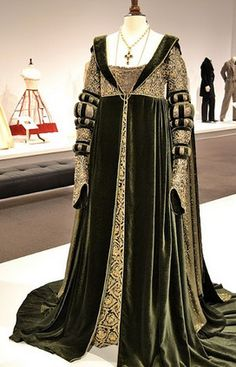

A moda surgiu em meados do século XV no início do renascimento europeu. A palavra moda significa costume e provém do latim modus.
A variação da característica das vestimentas surgiu para diferenciar o que antes era igual, usava-se um estilo de roupa desde a infância até a morte.

Pensando nos dias atuais patricinhas modas estudou tudo sobre o conceito de moda desde século xv até o século xxi.
Para que você possa entender mais sobre a moda, nós da empresa patricinhas modas estamos muitos empenhados em uma breve temporada da moda antiga nos dias atuais.